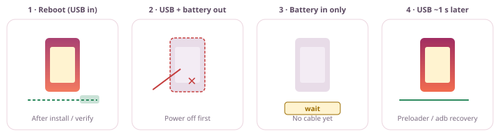

1 Setup
Type yes, get files, install, check.
Runs on your PC · plug in the phone · wipe only on the phone.
Plug in USB, run adb kill-server on the PC if host adb was used, then Connect phone. Pick TCL (1bbb) in Chrome — not preloader. The debugging prompt appears on the phone after connect (unlock the screen).
FlipMouse Arcade: separate step size for portrait (homescreen, ScummVM) vs landscape (landscape cursor). Requires root and Companion.
Set up Flip 2
Choose a profile, then run setup on the phone.
Your profile decides which apps, Magisk modules, and phone settings this setup installs—pick one below.
Type yes, get files, install, check.
Apply, manage, backup on Device, unroot.
·
Donor only — boot flash; wipe on phone.
·

Battery pull only for preloader during root.
No accounts on phone. Type manage.
Type unroot — marks modules, turns off USB debugging. Finish in Magisk on phone.
Contacts, messages, and apps backup live on the Device tab.
Confirm profile and consent, then download or pick verified copies on this PC.
Typing yes confirms you have opened Credits below and reviewed each maintainer's repository and license, and that you thank them for their work. It only unlocks the download buttons — this PC fetches the listed files and checks each SHA-256. Nothing is sent to the phone until you press Install.
| What | Credit | Link |
|---|
| Path | Flashes? | Wipes? |
|---|---|---|
| Prepare install | No | No |
| Release zip | No | No |
| Tier 3: erase and root | boot | Yes |
| Tier 3: return to factory | boot | On phone |
Prepare: no super/system/preloader. Tier 3: docs/SAFETY.md.
The first full download can take 10+ minutes — large installer zips and voice models verify one file at a time. The status line may sit on one number for a while; that is normal.
One-time on Linux — then replug the phone.
sudo cp 51-android-flip2-adb.rules /etc/udev/rules.d/sudo udevadm control --reload-rules && sudo udevadm triggeradb 1bbb:0167, 1bbb:0c01; preloader 0e8d:2000.
Allow USB debugging
Tap OK on the phone when prompted
Needs root on the phone.
Pushing many files and running install.sh on the phone can take several minutes — large APKs, Sherpa models, and Magisk modules install sequentially. While install.sh runs as root the log may pause until the script finishes; that is normal.
After updating Companion fully quit and reopen so fixes load.
Pushes to /data/local/flip2/incoming/, runs install script as root. Magisk may prompt restart on first boot; dialer *#*#217703#*#* if root fails.
Runs checks on the device.
Reboot once for wallpaper and display size. After Restart phone, USB may drop for a minute while the phone reboots — that is expected, not a failure.
This erases everything on the phone — apps, photos, settings. Only do it on a phone you can wipe. It replaces the boot image with neutron.img and touches no other partition.
Type erase to continue:
Unlock and flashing erase everything on the phone. Save contacts, messages, and apps to this PC now, and save a boot image copy if you use Return to factory later.
Phone on USB with debugging allowed. Saved to ~/flip2-pre-wipe-backup and companion backup folders on this computer.
No saved backup read yet.
The phone has a one-second startup mode before Android loads, and that is the only moment the wizard can take over. Nothing shows on the phone screen — read the panel below, not the phone.
Do this: leave the USB cable plugged in. Press Start watching, then take the battery out and put it back in.
The phone is in flashing mode, so the hard part is done. Press Connect to the phone. If it reports the phone is still locked, Unlock comes next and asks you to confirm on the keypad — that erases the phone. After the image is installed, press Restart the phone.
*#*#217703#*#*.This erases everything on the phone — apps, photos, settings — and puts its boot image back to a copy the wizard saved earlier. Nothing is downloaded, and no other partition is touched. The bootloader stays unlocked.
You do not need firmware from anywhere. The wizard keeps a copy of this phone's own boot image on this computer: step 1 saves one now, or you can use a copy saved on an earlier visit. That copy is what gets put back — which is also the only way to revive a phone that will not start.
Type factory to continue:
If the phone still starts, save a copy of the boot image it is running now — that is the image this step will later put back. Nothing is written to the phone. Leave it switched on and plugged in.
While the phone still starts on USB with adb allowed, save contacts, messages, and apps. Same folders as the Device tab (~/flip2-pre-wipe-backup).
No saved backup read yet.
If the phone will not start, use a copy you saved on an earlier visit. This is the only way to bring a phone that will not boot back.
The wizard reads the file off this computer again and checks it: that it really is a boot image, that its size fits the phone's boot partition, and that its SHA-256 is the one recorded when it was saved. If the file has changed since then, it is refused.
Switch the phone off. Then hold Volume down and plug the cable in — keep holding until a black screen with small white text appears. That is the bootloader. Leave the battery in.
If the screen stays black and the phone keeps restarting, it is stuck before the bootloader. Unplug it, take the battery out, put it back, then hold Volume down and plug in again.
The saved copy is installed. Restart the phone and let it start. It comes up on that boot image, still with all your data on it — the wipe comes next.
The wizard will not erase storage over the cable — that is the step most likely to leave a phone unbootable, so it stays on the phone where it is meant to happen.
This asks the phone what it is now and compares it with the copy that was put back: the same build, and root in the same state as when the copy was saved. Apps and data are only gone if you did the wipe in step 5.
The bootloader stays unlocked, so the phone reports verifiedbootstate as orange. That is the one non-stock fact, and it is expected. Relocking over a modified boot is the move most likely to hard-brick this phone, so this wizard never does it.
Sideload an apk, push a file, run a shell command, take a still screenshot, or send a key. Chrome WebUSB, or Flip2 Companion when host adb already holds USB.
Launcher4 and Null Keyboard need the package name typed. Other apps ask you to confirm.
Goes to /sdcard/Download. The name must be a single file name.
Refuses wipe, fastboot, recovery, format, and mkfs. reboot is allowed.
Use before Erase and root or factory reset. Set where backups are saved and browse what is on disk (Companion only).
Personal = contacts, messages, catalog apps. Boot = factory restore images. Pre-wipe = readable dumps for restore (e.g. pipeline exports).
—
No saved backup read yet.